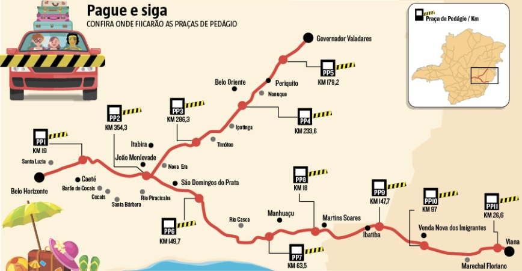

Patrícia é uma ótima desenvolvedora de software. No entanto, como quase toda pessoa brilhante, ela tem algumas manias estranhas, e uma delas é que tudo que ela faz tem que ser em número par. Muitas vezes essa mania não atrapalha, apesar de causar estranhamento nos outros. Alguns exemplos: ela tem que fazer diariamente um número par de refeições; no café da manhã toma duas xícaras de café, duas torradas e duas fatias de queijo; sempre que vai ao cinema compra dois bilhetes de entrada (felizmente sempre tem um amigo ou amiga lhe acompanhando); e toma dois banhos por dia (ou quatro, ou seis...).
Mas algumas vezes essa mania de Patrícia atrapalha. Por exemplo, ninguém gosta de viajar de carro com ela, pois se no trajeto ela tem que pagar pedágios, o número de pedágios que ela paga tem que ser par.

Patrícia mora em um país em que todas as estradas são bidirecionais e têm exatamente um pedágio. Ela precisa ir visitar um cliente em uma outra cidade, e deseja calcular o mínimo valor total de pedágios que ela tem que pagar, para ir da sua cidade à cidade do cliente, obedecendo à sua estranha mania de que o número de pedágios pagos tem que ser par.
A entrada consiste de diversas linhas. A primeira linha contém 2 inteiros C e V, o número total de cidades e o número de estradas (2 ≤ C ≤ 104 e 0 ≤ V ≤ 50000). As cidades são identificadas por inteiros de 1 a C. Cada estrada liga duas cidades distintas, e há no máximo uma estrada entre cada par de cidades. Cada uma das V linhas seguintes contém três inteiros C1, C2 e G, indicando que o valor do pedágio da estrada que liga as cidades C1 e C2 é G (1 ≤ C1, C2 ≤ C e 1 ≤ G ≤ 104). Patrícia está atualmente na cidade 1 e a cidade do cliente é C.
Uma única linha deve ser impressa, contendo um único inteiro, o custo total de pedágios para Patrícia ir da cidade 1 à cidade C, pagando um número par de pedágios, ou, se isso não for possível, o valor -1.
| Entrada | Saída |
|---|---|
4 4 1 2 2 2 3 1 2 4 10 3 4 6 |
12 |
| Entrada | Saída |
|---|---|
5 6 1 2 3 2 3 5 3 5 2 5 1 8 2 4 1 4 5 4 |
-1 |